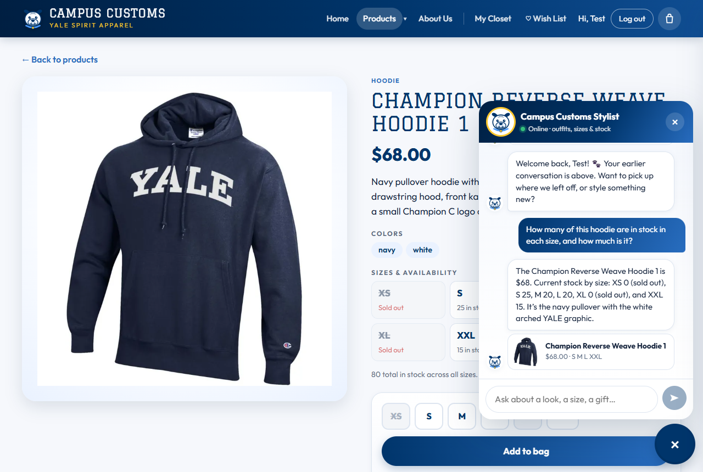
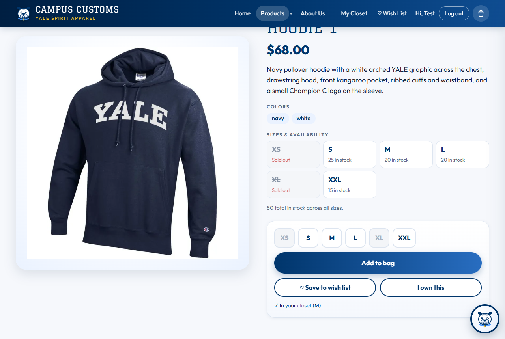
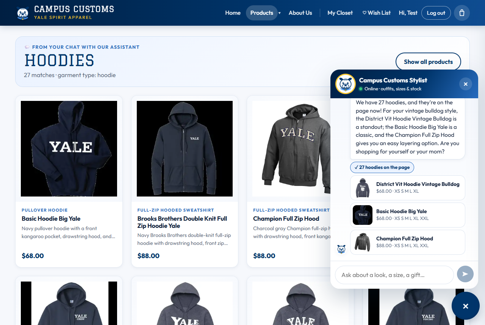
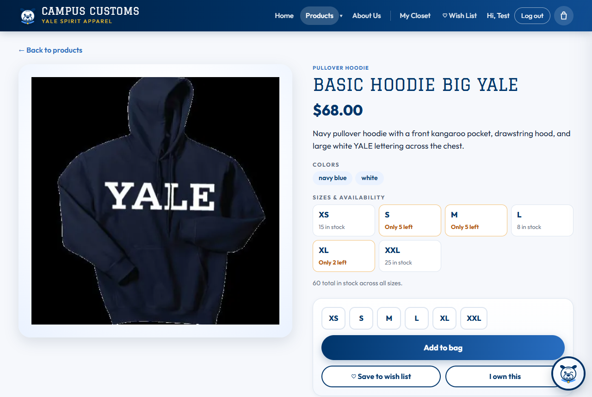
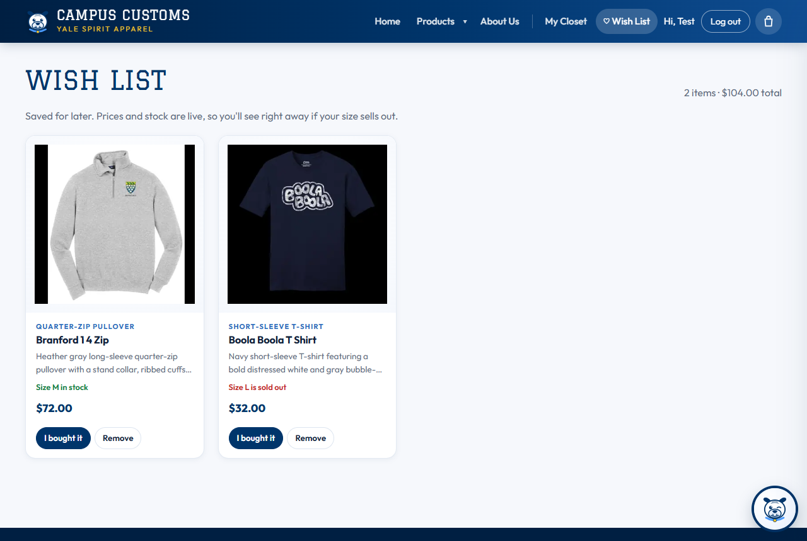
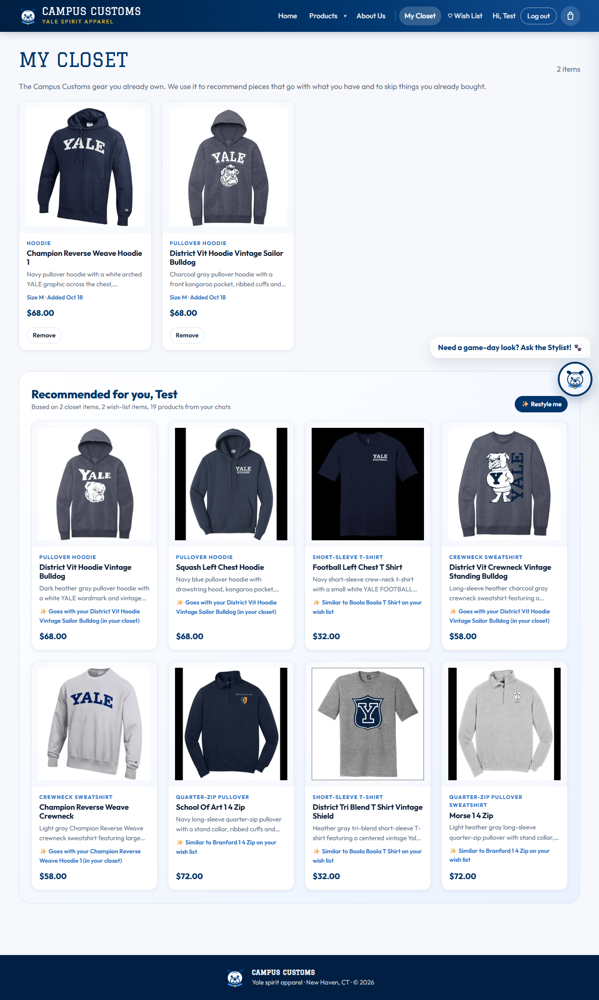

Summary
| # | Check | What was compared | Result |
|---|---|---|---|
| 1 | Chat checks an item's inventory | Stylist's answer vs. the product page vs. the catalogue / inventory tables | ✔ Pass: all 6 sizes and the price match |
| 2 | Category question → search-result cards on the page | "What hoodies do you have?" → cards on the Products page vs. hoodies in the database; a card opens its detail page | ✔ Pass: 27 cards = 27 hoodies |
| 3 | Problem 9 usability features (Wish List, My Closet + recommendations) | Wish-list stock flags vs. inventory; closet items and recommendation reasons | ✔ Pass |
How the screenshots were taken: a script (headless Microsoft Edge, driven over the DevTools protocol) logged in as the seeded test user
test@campuscustoms.yale.edu, typed into the chat and clicked cards like a shopper, and saved each screen at 1280×860.
Chat replies come from the live model (gpt-5.6-luna via the course Portkey gateway). "Database" values were read straight from
data/campus_customs.db with SQLite at test time.
Chat checks the inventory level of an item (honest stock and price from the database)
On the Champion Reverse Weave Hoodie 1 product page, I asked the chat: "How many of this hoodie are in stock in each size, and how much is it?" ("this" is resolved from the page the shopper is on, Problem 8).

get_product tool and didn't guess.
/api/products/{id}, shows the same numbers. XS and XL are struck through as sold out, S 25, M 20, L 20, XXL 15, $68.00, so the chat and the page agree.Database truth (SQLite, at test time)
| Source | Price | XS | S | M | L | XL | XXL |
|---|---|---|---|---|---|---|---|
catalogue / inventory | $68.00 | 0 | 25 | 20 | 20 | 0 | 15 |
| Stylist's chat answer | $68 | 0 (sold out) | 25 | 20 | 20 | 0 (sold out) | 15 |
| Product page | $68.00 | Sold out | 25 | 20 | 20 | Sold out | 15 |
Dynamic search-result cards appear after a category question
From the Home page, I asked the chat: "What hoodies do you have?"

page_results in the /api/chat response). The site then moved to Products and rendered them as cards (image, name, price, short description) under a "From your chat · Hoodies · 27 matches · garment type: hoodie" banner. The chat reply says "We have 27 hoodies, and they're on the page now!" and shows a "✓ 27 hoodies on the page" link.
Database truth
| Check | Database | Site |
|---|---|---|
| Hoodies in the catalogue (garment type contains "hood") | 27 | 27 cards on the page |
| Basic Hoodie Big Yale: price | $68.00 | $68.00 |
| Basic Hoodie Big Yale: XS / S / M / L / XL / XXL | 15 / 5 / 5 / 8 / 2 / 25 | 15 / Only 5 left / Only 5 left / 8 / Only 2 left / 25 |
Problem 9 usability features: Wish List, and My Closet with recommendations
Logged in as the test user, I opened ♡ Wish List and My Closet from the top bar.


Database truth
| Saved item (table) | Saved size | Stock of that size in inventory | Site shows |
|---|---|---|---|
Branford 1 4 Zip (wishlist_items) | M | 20 | Size M in stock · $72.00 |
Boola Boola T Shirt (wishlist_items) | L | 0 | Size L is sold out · $32.00 |
Champion Reverse Weave Hoodie 1 (closet_items) | M | n/a | In closet, Size M |
District Vit Hoodie Vintage Sailor Bulldog (closet_items) | M | n/a | In closet, Size M |
Other checks run the same day
| Check | Result |
|---|---|
Backend automated tests: test_auth 25, test_tools 11 (all 102 products and 612 size rows vs. SQL), test_agent 13, test_memory 22, test_usability 29 | ✔ 100 / 100 |
Frontend production build and lint (npm run build, npm run lint) | ✔ Clean |
Test-user login through /api/auth/login (PBKDF2 password check) | ✔ 200 OK |